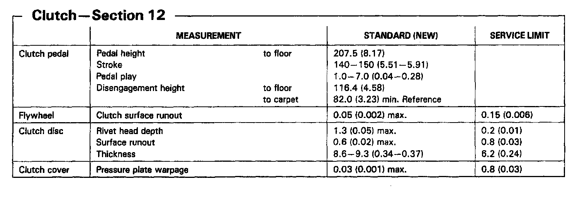
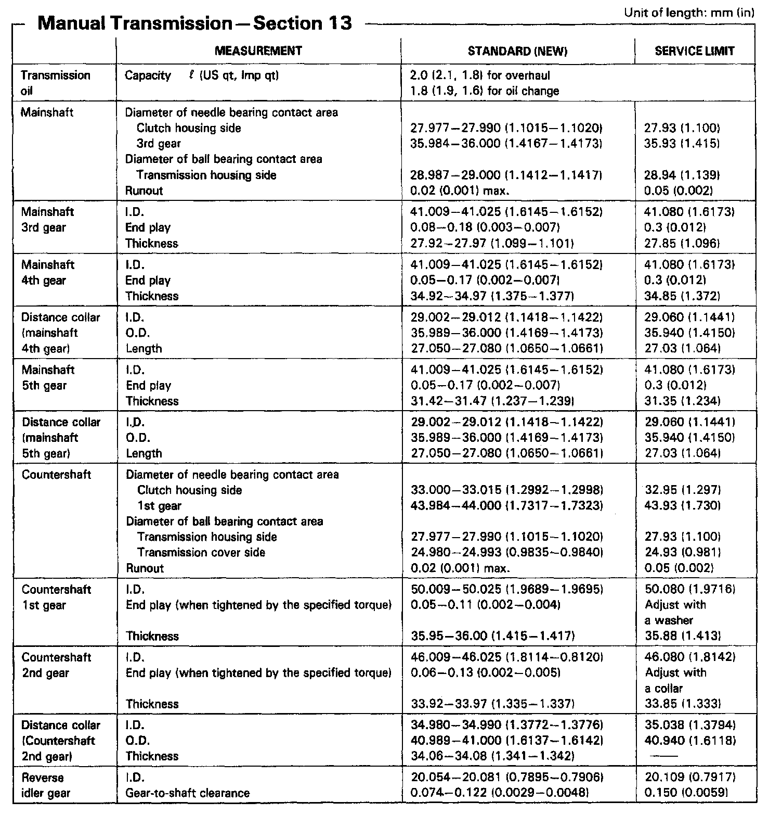
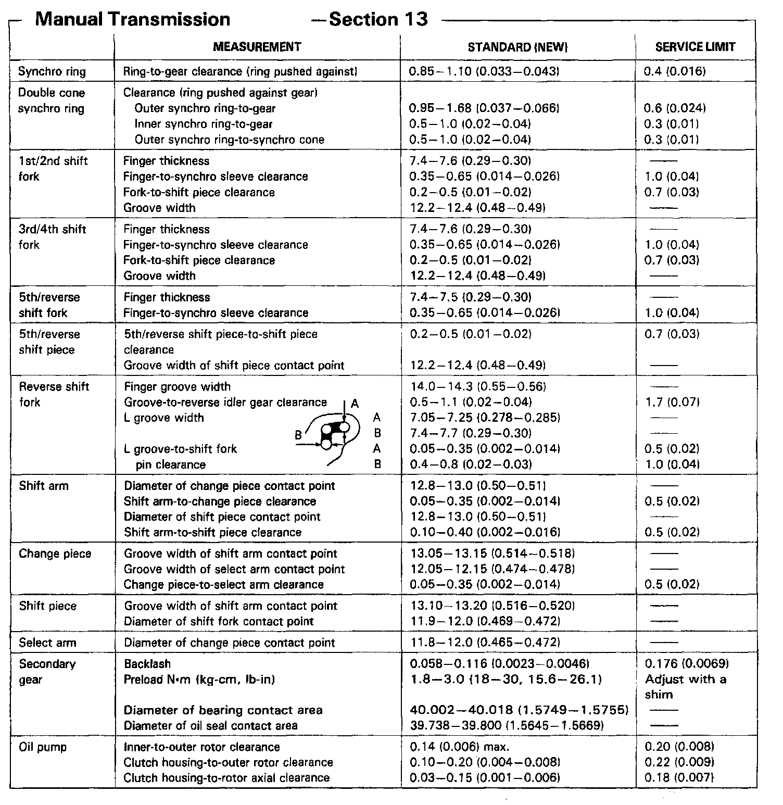
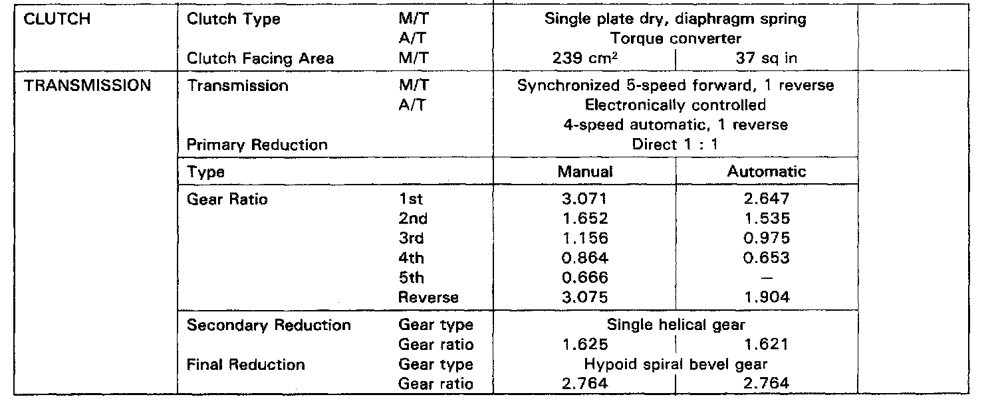

M/T Technical Data
L3A3 5-spd M/T, Clutch Measurements:

L3A3 5-spd M/T, Mainshaft & Countershaft Measurements:

LA3A 5-spd M/T, Synchro Rings, Shift Fork & Secondary Gear:

Manual/Automatic Transmission Gear Ratios:
